Next: Examples
Up: transmission_line
Previous: Reflection and termination
Summarizing the above, we have two simultaneous equations of two unknowns
and for the forward and backward voltages at the
front end (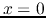):
Solving these simultaneous equations we get
The numerators represent the sources of the signals. The forward signal
is caused by the input first entering the line at  .
The backward signal is due to the forward signal reflected at
the back end of the line (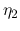), delayed by the round-trip traveling
time (
) for the signal to travel forward and then backward
along the length of the line. The common denominator represents the subsequent
reflections at both ends. As in general and , we
have
.
The backward signal is due to the forward signal reflected at
the back end of the line (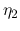), delayed by the round-trip traveling
time (
) for the signal to travel forward and then backward
along the length of the line. The common denominator represents the subsequent
reflections at both ends. As in general and , we
have
 and the denominator can be expanded to
become:
and the denominator can be expanded to
become:
Here the general term
 represents the signal
arriving at the front of the line after traveling forward and backward along
the line and being reflected at both ends times (
represents the signal
arriving at the front of the line after traveling forward and backward along
the line and being reflected at both ends times (
 ). When
). When
 and
and  , there will be infinite reflections between
the two ends.
, there will be infinite reflections between
the two ends.
Given 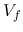 and  , the voltages and at the two ends.
At the front, we have
, the voltages and at the two ends.
At the front, we have
where  is the voltage transfer function at the front
defined as
is the voltage transfer function at the front
defined as
The two terms of the numerator correspond to the in-coming voltage and the
reflection from the back end, respectively. The input current is
The input impedance of the transmission line can be obtained as:
At the back end, we have
where  is the voltage transfer function at the back end defined as
is the voltage transfer function at the back end defined as
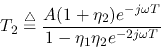
The two terms of the numerator correspond to the in-coming voltage arriving at
the back end after a time dealy of  and the immediate reflection at the back
end. The output current is
and the immediate reflection at the back
end. The output current is
We can easily verify that indeed :
The output impedance of the transmission line can be defined as the
ratio of the open-circuit voltage  (when
(when  ,
,  ) and
the short-circuit current
) and
the short-circuit current  (when 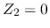,
(when 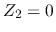,  ). But as
). But as
we get
We consider some special cases.
- When the length of the transmission line is integer multiple of half of
the wavelength ; i.e.,
we have
and
- If the transmission line matches the load, 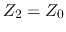 and
 ,
we have
. Moreover, if the transmission line also matches the
internal impedance of the source,
,
we have
. Moreover, if the transmission line also matches the
internal impedance of the source,  and 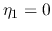, we have ,
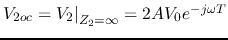, and
.
and 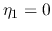, we have ,
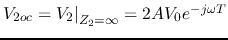, and
.
In summary, we have:
- Characteristic impedance and traveling velocity:
- Attenuation ratio and reflection coefficients:
- Voltage transfer functions:
- Input and output impedances:
 is of the order
,
is of the order
,  is of the
order
, the speed is
is of the order
.
is of the
order
, the speed is
is of the order
.
Next: Examples
Up: transmission_line
Previous: Reflection and termination
Ruye Wang
2016-05-20